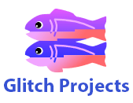

 EditB's Glitch Projects
Here are some Glitch projects I've created. Enjoy your browse and have a lovely day!
Server side scripting (with no database)
Timestamp Microservice
User Stories:
- I can pass a string as a parameter, and it will check to see whether that string contains either a unix timestamp or a natural language date (example: January 1, 2016).
- If it does, it returns both the Unix timestamp and the natural language form of that date.
- If it does not contain a date or Unix timestamp, it returns null for those properties.
Server side scripting (using MongoDB)
URL-Shortener Microservice
User Stories:
- I can pass a URL as a parameter and I will receive a shortened URL in the JSON response.
- If I pass an invalid URL that doesn't follow the valid http://www.example.com format, the JSON response will contain an error instead.
- When I visit that shortened URL, it will redirect me to my original link.